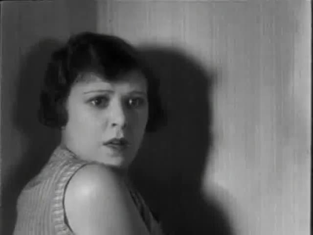

Un Chien Andalou, frame at 11:09
Luis Buñuel · 1929 · Silent film, black and white (frame)
Free to use
This was Buñuel's first film, and he edited it himself; one account says he did so in his kitchen with no equipment, after the money ran out. Before the first screening in Paris he put stones in his pockets to throw at the audience if things went badly. The film ran for eight months, and forty or fifty informers went to the police asking for a ban, but it was never banned.